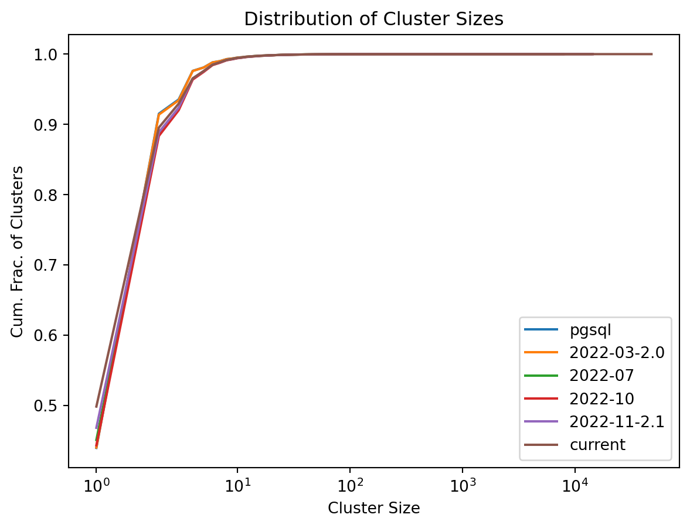

import pandas as pd
import matplotlib.pyplot as pltISBN Cluster Changes
This notebook audits for significant changes in the clustering results in the book data, to allow us to detect the significance of shifts from version to version. It depends on the aligned cluster identities in isbn-version-clusters.parquet.
Data versions are indexed by month; versions corresponding to tagged versions also have the version in their name.
We are particularly intersted in the shift in number of clusters, and shifts in which cluster an ISBN is associated with (while cluster IDs are not stable across versions, this notebook works on an aligned version of the cluster-ISBN associations).
Load Data
Define the versions we care about:
versions = ['pgsql', '2022-03-2.0', '2022-07', '2022-10', '2022-11-2.1', 'current']Load the aligned ISBNs:
isbn_clusters = pd.read_parquet('isbn-version-clusters.parquet')
isbn_clusters.info()<class 'pandas.core.frame.DataFrame'>
RangeIndex: 43027360 entries, 0 to 43027359
Data columns (total 8 columns):
# Column Dtype
--- ------ -----
0 isbn object
1 isbn_id int32
2 current float64
3 2022-11-2.1 float64
4 2022-10 float64
5 2022-07 float64
6 2022-03-2.0 float64
7 pgsql float64
dtypes: float64(6), int32(1), object(1)
memory usage: 2.4+ GBCluster Counts
Let’s look at the # of ISBNs and clusters in each dataset:
metrics = isbn_clusters[versions].agg(['count', 'nunique']).T.rename(columns={
'count': 'n_isbns',
'nunique': 'n_clusters',
})
metrics| n_isbns | n_clusters | |
|---|---|---|
| pgsql | 24482342 | 13213677 |
| 2022-03-2.0 | 24503563 | 13201869 |
| 2022-07 | 32715079 | 17078096 |
| 2022-10 | 32715078 | 16882949 |
| 2022-11-2.1 | 33505211 | 17673075 |
| current | 42979427 | 23191293 |
Cluster Size Distributions
Now we’re going to look at how the sizes of clusters, and the distribution of cluster sizes and changes.
sizes = dict((v, isbn_clusters[v].value_counts()) for v in versions)
sizes = pd.concat(sizes, names=['version', 'cluster'])
sizes.name = 'size'
sizesversion cluster
pgsql 100007751.0 7818
124319853.0 7520
100386149.0 6518
110247989.0 4276
123212719.0 3712
...
current 116645882.0 1
124508765.0 1
122769739.0 1
120222596.0 1
901090064.0 1
Name: size, Length: 101240959, dtype: int64Compute the histogram:
size_hist = sizes.groupby('version').value_counts()
size_hist.name = 'count'
size_histversion size
2022-03-2.0 2 6256782
1 5807972
4 551072
3 268793
6 96525
...
pgsql 3712 1
4276 1
6518 1
7520 1
7818 1
Name: count, Length: 2703, dtype: int64And plot the cumulative distributions:
for v in versions:
vss = size_hist.loc[v].sort_index()
vsc = vss.cumsum() / vss.sum()
plt.plot(vsc.index, vsc.values, label=v)
plt.title('Distribution of Cluster Sizes')
plt.ylabel('Cum. Frac. of Clusters')
plt.xlabel('Cluster Size')
plt.xscale('symlog')
plt.legend()
plt.show()
Save more metrics:
metrics['max_size'] = pd.Series({
v: sizes[v].max()
for v in versions
})
metrics| n_isbns | n_clusters | max_size | |
|---|---|---|---|
| pgsql | 24482342 | 13213677 | 7818 |
| 2022-03-2.0 | 24503563 | 13201869 | 7976 |
| 2022-07 | 32715079 | 17078096 | 13988 |
| 2022-10 | 32715078 | 16882949 | 14378 |
| 2022-11-2.1 | 33505211 | 17673075 | 14378 |
| current | 42979427 | 23191293 | 47857 |
Different Clusters
ISBN Changes
How many ISBNs changed cluster across each version?
statuses = ['same', 'added', 'changed', 'dropped']
changed = isbn_clusters[['isbn_id']].copy(deep=False)
for (v1, v2) in zip(versions, versions[1:]):
v1c = isbn_clusters[v1]
v2c = isbn_clusters[v2]
cc = pd.Series('same', index=changed.index)
cc = cc.astype('category').cat.set_categories(statuses, ordered=True)
cc[v1c.isnull() & v2c.notnull()] = 'added'
cc[v1c.notnull() & v2c.isnull()] = 'dropped'
cc[v1c.notnull() & v2c.notnull() & (v1c != v2c)] = 'changed'
changed[v2] = cc
del cc
changed.set_index('isbn_id', inplace=True)
changed.head()| 2022-03-2.0 | 2022-07 | 2022-10 | 2022-11-2.1 | current | |
|---|---|---|---|---|---|
| isbn_id | |||||
| 16019319 | same | same | same | same | same |
| 13807969 | same | same | same | same | added |
| 31809866 | same | added | same | same | same |
| 25265130 | same | same | same | same | same |
| 39652144 | same | added | same | same | same |
Count number in each trajectory:
trajectories = changed.value_counts()
trajectories = trajectories.to_frame('count')
trajectories['fraction'] = trajectories['count'] / len(changed)
trajectories['cum_frac'] = trajectories['fraction'].cumsum()trajectories| count | fraction | cum_frac | |||||
|---|---|---|---|---|---|---|---|
| 2022-03-2.0 | 2022-07 | 2022-10 | 2022-11-2.1 | current | |||
| same | same | same | same | same | 23838493 | 5.540310e-01 | 0.554031 |
| added | 9488634 | 2.205256e-01 | 0.774557 | ||||
| added | same | same | same | 8060173 | 1.873267e-01 | 0.961883 | |
| same | same | added | same | 785006 | 1.824434e-02 | 0.980128 | |
| changed | same | same | same | 219422 | 5.099592e-03 | 0.985227 | |
| same | changed | same | same | 193771 | 4.503437e-03 | 0.989731 | |
| added | same | same | changed | 104536 | 2.429524e-03 | 0.992160 | |
| same | same | same | changed | 101399 | 2.356617e-03 | 0.994517 | |
| added | same | same | same | same | 85440 | 1.985713e-03 | 0.996503 |
| changed | same | same | same | same | 42072 | 9.777965e-04 | 0.997480 |
| dropped | added | same | same | same | 41942 | 9.747751e-04 | 0.998455 |
| same | same | same | same | 23808 | 5.533224e-04 | 0.999008 | |
| same | added | same | same | dropped | 13988 | 3.250955e-04 | 0.999334 |
| dropped | same | same | same | 8671 | 2.015229e-04 | 0.999535 | |
| changed | same | same | changed | 5180 | 1.203885e-04 | 0.999655 | |
| same | same | added | changed | 4577 | 1.063742e-04 | 0.999762 | |
| changed | changed | same | same | same | 2733 | 6.351772e-05 | 0.999825 |
| added | changed | same | same | same | 1446 | 3.360652e-05 | 0.999859 |
| same | same | changed | same | changed | 1149 | 2.670394e-05 | 0.999886 |
| same | same | dropped | 988 | 2.296213e-05 | 0.999909 | ||
| changed | same | same | same | changed | 707 | 1.643141e-05 | 0.999925 |
| added | same | same | same | changed | 703 | 1.633844e-05 | 0.999941 |
| dropped | same | same | added | same | 598 | 1.389813e-05 | 0.999955 |
| same | added | 492 | 1.143458e-05 | 0.999967 | |||
| same | dropped | same | same | added | 368 | 8.552698e-06 | 0.999975 |
| changed | same | changed | same | same | 254 | 5.903221e-06 | 0.999981 |
| added | same | same | same | dropped | 246 | 5.717292e-06 | 0.999987 |
| changed | changed | same | same | changed | 127 | 2.951610e-06 | 0.999990 |
| added | same | same | dropped | same | 92 | 2.138174e-06 | 0.999992 |
| changed | same | same | 67 | 1.557149e-06 | 0.999994 | ||
| same | dropped | same | added | same | 51 | 1.185292e-06 | 0.999995 |
| added | dropped | same | same | same | 49 | 1.138810e-06 | 0.999996 |
| changed | same | same | changed | 30 | 6.972308e-07 | 0.999997 | |
| changed | same | same | same | dropped | 29 | 6.739898e-07 | 0.999997 |
| same | changed | same | same | dropped | 22 | 5.113026e-07 | 0.999998 |
| dropped | added | same | same | changed | 19 | 4.415795e-07 | 0.999998 |
| changed | same | changed | same | changed | 10 | 2.324103e-07 | 0.999998 |
| dropped | same | same | same | 10 | 2.324103e-07 | 0.999999 | |
| same | same | same | added | dropped | 8 | 1.859282e-07 | 0.999999 |
| changed | same | 6 | 1.394462e-07 | 0.999999 | |||
| dropped | added | same | same | dropped | 5 | 1.162051e-07 | 0.999999 |
| same | added | same | dropped | same | 5 | 1.162051e-07 | 0.999999 |
| changed | same | same | 4 | 9.296410e-08 | 0.999999 | ||
| changed | same | same | dropped | added | 4 | 9.296410e-08 | 0.999999 |
| added | changed | same | dropped | same | 4 | 9.296410e-08 | 0.999999 |
| dropped | same | same | added | 3 | 6.972308e-08 | 1.000000 | |
| same | same | same | dropped | same | 3 | 6.972308e-08 | 1.000000 |
| added | changed | same | same | dropped | 3 | 6.972308e-08 | 1.000000 |
| changed | dropped | same | same | added | 2 | 4.648205e-08 | 1.000000 |
| same | dropped | same | added | changed | 2 | 4.648205e-08 | 1.000000 |
| added | same | same | dropped | added | 1 | 2.324103e-08 | 1.000000 |
| same | added | changed | same | changed | 1 | 2.324103e-08 | 1.000000 |
| changed | same | same | dropped | same | 1 | 2.324103e-08 | 1.000000 |
| same | changed | changed | same | changed | 1 | 2.324103e-08 | 1.000000 |
| added | dropped | same | added | same | 1 | 2.324103e-08 | 1.000000 |
| changed | changed | same | dropped | added | 1 | 2.324103e-08 | 1.000000 |
| same | same | changed | changed | same | 1 | 2.324103e-08 | 1.000000 |
| dropped | same | same | added | changed | 1 | 2.324103e-08 | 1.000000 |
| added | same | dropped | same | same | 1 | 2.324103e-08 | 1.000000 |
metrics['new_isbns'] = (changed[versions[1:]] == 'added').sum().reindex(metrics.index)
metrics['dropped_isbns'] = (changed[versions[1:]] == 'dropped').sum().reindex(metrics.index)
metrics['changed_isbns'] = (changed[versions[1:]] == 'changed').sum().reindex(metrics.index)
metrics| n_isbns | n_clusters | max_size | new_isbns | dropped_isbns | changed_isbns | |
|---|---|---|---|---|---|---|
| pgsql | 24482342 | 13213677 | 7818 | NaN | NaN | NaN |
| 2022-03-2.0 | 24503563 | 13201869 | 7976 | 88086.0 | 66865.0 | 45950.0 |
| 2022-07 | 32715079 | 17078096 | 13988 | 8220673.0 | 9157.0 | 228969.0 |
| 2022-10 | 32715078 | 16882949 | 14378 | 0.0 | 1.0 | 195258.0 |
| 2022-11-2.1 | 33505211 | 17673075 | 14378 | 790244.0 | 111.0 | 7.0 |
| current | 42979427 | 23191293 | 47857 | 9489505.0 | 15289.0 | 218442.0 |
The biggest change is that the July 2022 update introduced a large number (8.2M) of new ISBNs. This update incorporated more current book data, and changed the ISBN parsing logic, so it is not surprising.
Let’s save these book changes to a file for future re-analysis:
changed.to_parquet('isbn-cluster-changes.parquet', compression='zstd')Final Saved Metrics
Now we’re going to save this metric file to a CSV.
metrics.index.name = 'version'
metrics| n_isbns | n_clusters | max_size | new_isbns | dropped_isbns | changed_isbns | |
|---|---|---|---|---|---|---|
| version | ||||||
| pgsql | 24482342 | 13213677 | 7818 | NaN | NaN | NaN |
| 2022-03-2.0 | 24503563 | 13201869 | 7976 | 88086.0 | 66865.0 | 45950.0 |
| 2022-07 | 32715079 | 17078096 | 13988 | 8220673.0 | 9157.0 | 228969.0 |
| 2022-10 | 32715078 | 16882949 | 14378 | 0.0 | 1.0 | 195258.0 |
| 2022-11-2.1 | 33505211 | 17673075 | 14378 | 790244.0 | 111.0 | 7.0 |
| current | 42979427 | 23191293 | 47857 | 9489505.0 | 15289.0 | 218442.0 |
metrics.to_csv('audit-metrics.csv')